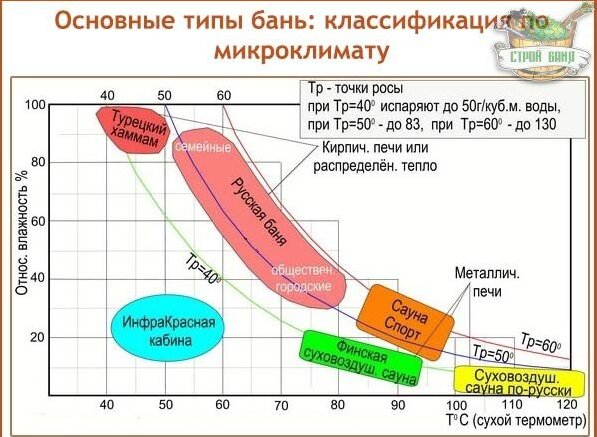
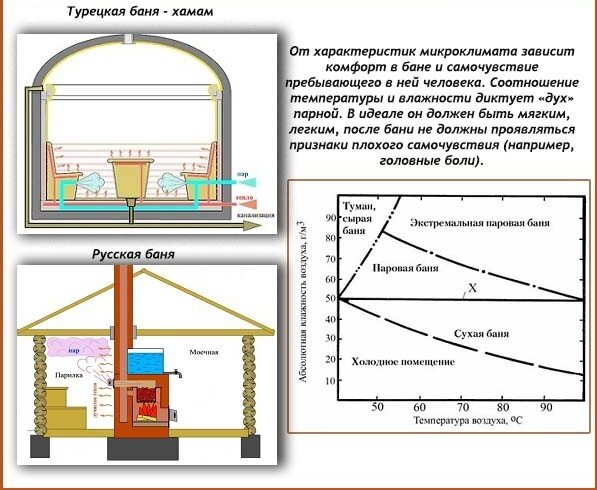
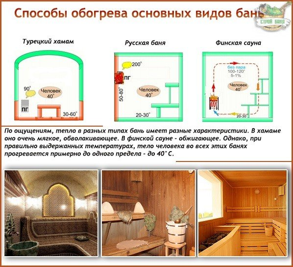

Классификация всех существующих типов бань по микроклимату, способу обогрева и парообразованию
Каких только бань не придумало человечество на пути своего развития! Каждый народ по-своему решал гигиенические вопросы, создавая собственные бани или внося коррективы в уже существующие традиции. Нам повезло, ведь мы имеем возможность пожинать плоды этого наследия. Хотим попариться с веничком – добро пожаловать в русскую парную, появится желание прогреться сухим воздухом – идем в финскую сауну. Существуют разные виды бань. И главное отличие их не в названиях, интерьере или техническом исполнении. Самое важное – микроклимат, то есть соотношение температуры и влажности. От этого зависит, насколько приятным и комфортным будет ваше пребывание в бане, какие ощущения вы получите.
Классификация бань по микроклимату
Бани можно подразделить на несколько основных типов:
- Паровая баня – турецкий хамам (t=40-45°C, f=90-100%)
- Паровая сауна – русская баня (t=45-70°C, f=40-65%)
- Суховоздушная сауна – финская сауна (t=70-110°C, f=8-20%)
- Влажная сауна – Сауна-Спорт (t=75-95°C, f=25-30%)
- Водяная баня – японская офуро (t=40-60°C, f=100%)
- Переходные варианты между русской и финской банями (tср=60°C, fср=30%)
Паровая баня – турецкий хамам (t=40-45°C, f=90-100%).
Турецкий хамам отличается мягким микроклиматом, который характеризуется невысокой температурой в сочетании с почти абсолютной влажностью. В хамаме отдыхают, проводят различные косметические процедуры: маски, массажи, пилинги.
Паровая сауна – русская баня (t=45-70°C, f=40-65%)
В русской бане высокая влажность и средние температуры. При таком микроклимате пар конденсируется на коже, образуя тонкую пленку воды. По ощущениям это схоже с принятием душа из мелких нагретых капель. Теплопроводность воды значительно больше, чем обычного воздуха, поэтому организм в таких условиях прогревается сильнее, чем в суховоздушной сауне (при одинаковых температурах).
Суховоздушная сауна – финская сауна (t=70-110°C, f=8-20%)
В суховоздушной сауне очень низкая влажность и практически нет пара. Поэтому, чтобы прогреть организм так же глубоко, как и в русской бане, приходится повышать температуру – она в финской сауне может доходить до экстремальных пределов.
Влажная сауна – Сауна-Спорт (t=75-95°C, f=25-30%)
Этот вид бань возник в результате трансформации суховоздушного режима финской сауны. Влажность здесь повышают искусственно, путем поливания водой раскаленных камней каменки. Спортивная сауна вредна для здоровья и опасна для жизни. Используется в спортивных состязаниях на выносливость.
Водяная баня – японская офуро (t=40-60°C, f=100%)
Офуро – самый экзотический тип бань, представляющий собой обогреваемую бочку, наполненную горячей водой. По сути, это горячая ванна. Кожа человека под водой не дышит, но повышенная температура провоцирует довольно сильное потоотделение. Горячая вода вымывает из пор образовавшийся пот, жиры и шлаки.
Переходные варианты между русской и финской банями (tср=60°C, fср=30%)
К таким баням относятся греческие лаконикумы, римские термы, баня Маслова и др.


Разнообразие в способах обогрева
Все существующие типы бань «работают» при повышенных температурах. При этом нагрев, для формирования специфического микроклимата бани, может осуществляться различными устройствами.
1. Паровая баня (хамам)
Обогревается трубами с нагретой водой, проложенными под стенами, полом, лежаками. Получаемое распределенное тепло (РТ) быстро нагревает парную до необходимых температур. Большая площадь прогреваемых поверхностей позволяет получить в хамаме так называемый «легкий» пар. Недостатком РТ является дороговизна изготовления и трудоемкость монтажа.
2. Паровая сауна (русская баня)
В идеале – кирпичная закрытая печь-каменка. Она долго разогревается и долго держит полученное тепло, благодаря теплоаккумулирующим свойствам кирпичных стенок и камням, которые помещаются непосредственно в печь. Открытая каменка в русской бане не приветствуется.
В паровой сауне допускается использование металлической печи в защитном кирпичном кожухе или каменной облицовке. Чем толще будут стенки кожуха (облицовка), тем выше теплоаккумулирующие свойства.
3. Финская сауна и Сауна-Спорт
Эти виды бани отличаются высокотемпературным режимом, который легко обеспечивается любой металлической печкой «для сауны». Такая печь быстро раскаляется до нужных температур и, так как практически не держит тепло, быстро остывает. Теплоаккумулирующие свойства практически сведены на нет. Металлическая печь – самый дешевый вариант нагрева бани.
4. Водяная баня
Для подогрева воды используется дровяная металлическая печь, которая размещается непосредственно в бочке-офуро.

Деление по условиям влажности и пара
И последнее, что формирует микроклимат и делает русскую баню – паровой, а финскую сауну – суховоздушной, это влажность. При этом «нагнать» пар можно по-разному.
1. Паровая баня (хамам)
Пар получают от парогенераторов или котлов с кипящей водой, которые встраивают за стенами. Другим источником пара становятся разогретые каменные (облицованные плиткой) лежаки, стены, пол. Все это поливается водой, которая превращается в мелкодисперсный, «легкий» пар.
2. Паровая сауна (русская баня)
Пар исходит от кипящей воды котла, который устанавливают на печь. Повышение влажности также происходит путем подливания воды на камни внутри печи (400-500°С).
3. Финская сауна
Влажность очень маленькая, но может быть повышена при испарении порции воды, выплеснутой на камни каменки (200-250°С).
4. Сауна-Спорт
Экстремальный микроклимат в спортивной сауне создается на основе суховоздушного режима финской бани при повышении влажности. На открытые камни раскаленной печи каждые 30 сек. наливают 0,5л. воды – влажность резко повышается, вместе с этим повышается и температура. В такой «душегубке» люди нередко получают тяжелейшие ожоги кожи и внутренних органов.
5. Водяная баня
В водяной бане пар исходит от воды, нагретой в бочке-офуро.
Классификация бань по микроклимату является, пожалуй, одной из наиболее информативных. Начиная строительство бани, первым делом следует задуматься именно о микроклимате и решить, что вы хотите получить от бани – мягкий равномерный прогрев с распариванием тела или же сухой горячий жар. А то, как вы назовете свою баню, будет уже вторично.